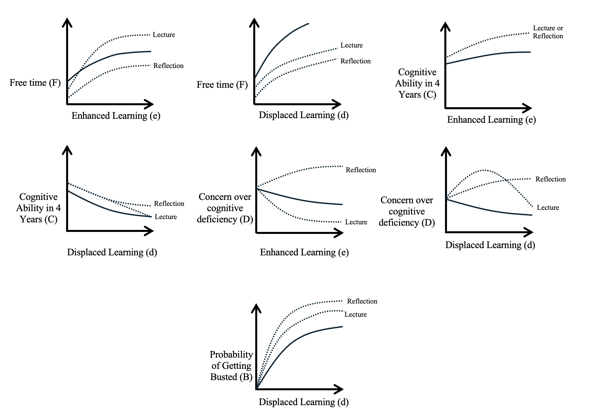

By Cole Kehrberg and Ellie Porrata
Introduction
Consider a high school student who has just finished a long day of school, extracurricular activities, and other obligations. They sit down at their desk, intending to write an essay, only to stare at a blank document. With exhaustion settling in and due dates for assignments approaching, the option to utilize AI for some quick help stands out. To the student, an assignment that once needed time, struggle, and critical thinking skills, now only requires a prompt in specialized software. For many students, the choice to use AI comes not from laziness, but from ease and academic survival. However, in a moment of convenience, something else is at risk.
Across classrooms, students rely on AI heavily. In high schools where students have unrestricted access to AI, educational outcomes worsened when educators removed access to AI tools, indicating a dependence rather than knowledge of how to use AI effectively (Bastani, et al., 2025). At the same time, national standardized test scores are down across the board (Carrillo, 2025). Thus, AI reliance is at the center of a modern educational conundrum. Students face academic and personal pressures, making the AI shortcut very appealing, while instructors worry about the long-term consequences to their students’ learning. AI’s prevalence in schools is now an unavoidable reality. Therefore, the pressing issue is how students use the technology and how it shapes their academic development.
Proponents of AI argue that the new technology is a learning tool, rather than a hindrance to education. Even with poor performance in academic studies, innovative technology needs time to evolve into useful tools. Therefore, those who support AI argue that as students learn how to use it effectively, the technology could bolster the learning of young people, rather than undermine it. To address these concerns, bringing literacy programs to schools may help to bridge the divide between the fact that AI has immense academic potential, and the reality that the innovation is currently harming learning outcomes in schools.
To address educational concerns and the improper uses of AI, instructors can employ a variety of pedagogical tools, two of which this paper will examine. One strategy is an AI literacy lecture that educates students about proper use of the technology, alongside the dangers of improper use. The other strategy is an AI reflection essay that requires students to critically analyze their usage of AI, asking them to detail how and why the technology was used. With both policies, the goal is to increase AI use for supplemented student learning and decrease AI use for displaced learning.
The purpose of the AI literacy lecture is to show students how to properly use the assistive learning technology. An AI literacy lecture details the benefits of responsible usage, while recognizing the technology’s shortcomings. To implement this policy, instructors must deeply understand AI themselves, develop a lecture to communicate their knowledge, and set aside time in their course schedule to deliver the information. From the student perspective, the loss of some class time creates the possibility of understanding the course learning objectives less but improves their ability to learn the content outside of class hours, by increasing their ability to recognize proper AI usage.
Meanwhile, AI reflection essays require students to critically reflect on how they have used AI, allowing them to uncover its benefits and harms themselves. With an essay policy, students spend more time reflecting on how they used AI in practice. Teachers may have students reflect on how they utilized AI for learning, how they critically analyzed the results, and how they would adjust their behavior if they attempted the assignment a second time. By nature of the policy, students uncover where AI supplemented their learning and where AI displaced their learning. Each policy has its benefits, so how can educators select a policy to address the societal problem of deteriorating education quality in the wake of the AI boom?
Many students’ AI tendencies start in high school because that period provides formidable and essential growth in the development of a student’s brain, habits, and mind. Currently, many high school students do not have enough time to balance homework, extracurricular activities, family obligations, a social life, and time for themselves (Parker, 2014). With a lack of time already, a reflection policy in school that results in extra work on assignments may not be what students need. At the same time, studies have found high school students often struggle to stay engaged in lectures, raising questions of the effectiveness of AI literacy programs (de Neufville, 2023). Therefore, it may come down to how teachers value AI utilization in the classroom. Do teachers put more value on students’ ability to develop AI skills that enhance their ability to learn, or do they focus their efforts on preventing improper use of the technology? This paper reveals that educators who seek to enhance student learning through proper usage will implement AI literacy lectures, while those who hope to prevent misuse will institute reflection essays.
Review of Literature
As the development of AI progresses, students have begun to use innovations such as ChatGPT, Gemini, PhotoMath, and Microsoft CoPilot for education on a regular basis, with usage beginning as early as thirteen (Mcclain et al., 2026). These platforms allow users to input prompts, and AI generates answers using language models trained on large databases, producing human-like responses based on patterns learned from extensive data (OpenAI, 2024). Students find these perks to improve their productivity and efficiency in completing their assignments. Students use AI to help with idea generation, feedback, tutoring, simplifying complex problems, and saving time (Munaye et. al, 2026). However, accessing information that caters to one’s personal prompts also creates opportunities for students to take advantage of AI. While the technology offers strengths, it can also encourage overreliance, increase plagiarism, and reduce critical thinking skills (Hasanein & Sobaih, 2023). Therefore, while AI can improve students’ education by supplementing efficiency in classwork, it can also act as a substitute for learning. These tradeoffs inform a key question for teachers to ponder: how do educators weigh developing new skills against substituting foundational ones?
Several behavioral economic factors influence students’ behavior and decision-making surrounding AI use. Effort aversion, the tendency to avoid tasks that require cognitive or physical effort, becomes especially relevant, as students now have a tool that can do the work for them (Gerlich, 2025). Therefore, the effort of reading textbooks, watching online videos, or learning from outside help takes more time than simply prompting a large language model and clicking a button. Similarly, present bias leads students to prioritize the current reward of completing the task quickly rather than investing time into knowledge that would benefit them in the long term (Lie et al., 2025). These biases imply that even with strict rules, students may continue using AI if it reduces effort, supplies an immediate reward, or if their peers utilize it. Therefore, literacy-based programs effectively reshape students’ decision-making and thought processes around AI.
Inconsistencies across academic settings in AI policies reinforce this uncertainty. Due to AI being a relatively new technology, educators and institutions are still learning how to successfully incorporate it into learning environments. As a result, policies vary widely, as some instructors enforce very strict rules, while others allow for more flexible use (Chirikov, 2026). The lack of universal policies creates confusion among students regarding what constitutes acceptable AI use (Wang et al., 2023). Students interpret unclear rules differently, resulting in varying behaviors. Confusion surrounding use suggests that clarity in policy design is crucial, regardless of the type of policy. Transparent expectations on how to use AI in a literacy program establishes a foundation and skillset in students, while clear guidelines for a reflection policy heightens awareness of their actions. Through an AI literacy lecture or reflection, educators clarify their beliefs and expectations surrounding the technology, which enhances students’ ability to harness the technology for education, and reduces students’ incentive to abuse the technology for displaced learning.
As AI changes the landscape of education, teachers may approach the issue with AI literacy lectures, which provide guidelines on proper utilization of AI. AI literacy lectures can take many forms, but the core components include: (1) using AI; (2) understanding AI; and (3) appreciating the relationship between AI, society, and the environment (Stolpe & Hallström, 2024). These three criteria ensure that humans recognize where AI impacts them, and where they can impact AI. Through understanding this relationship, students critically engage with AI, which leads them to think about the content matter of instruction more meaningfully, as well. In short, the goal behind targeted literacy lectures is to amplify human intelligence, rather than replace it.
Alternatively, reflective essays require students to think critically through their personal scenarios and how to approach the use of AI. Literacy through the form of reflection allows students to discuss the process of AI utilization more holistically, providing students with an opportunity to discuss approaches they took, challenges they faced, and insights they gained (Walter, 2024). Reflective techniques may be familiar concepts to teachers, as they echo many common pedagogical tools.
Many teachers are fundamentally against the use of AI, claiming it is inherently a threat to human intelligence. However, a correlation exists between a teacher’s opinion of AI and their own personal literacy (Çayak, 2024). Thus, the first hurdle to clear for literacy in students is ensuring that the teacher properly understands AI, with respect to the core pillars of AI literacy outlined previously. Once the educator understands the technology thoroughly, they must determine a path forward with AI literacy for their students, with the understanding that some form of literacy program would be preferable to no program at all (Bećirović et al., 2025).
From a student perspective, the benefits from AI literacy lectures and reflections come from critical analysis. The misuse of AI for “intellectual outsourcing,” can undermine cognitive functions and problem-solving abilities (Hassen, 2025). This misuse displaces cognitive work for students, which negatively affects their overall learning of the subject matter. Students exhibit risk aversion when they fear getting caught improperly using AI and facing academic consequences (Chiu et al., 2023). AI policies in the classroom will increase a student’s concern of getting caught, as educators set expectations. Additionally, social norms play a role as students are more likely to use AI if their peers do so (Langreo, 2023). While risk aversion varies depending on the individual, policies and expectations contribute to a classroom baseline concern of getting caught.
Additionally, a student’s decision to use AI depends on their concern of the technology. Those that believe AI is inaccurate, a cheat code, or against the rules, are less likely to use it. On the other hand, those that perceive it as acceptable tend to use it more (Lund et al., 2025). Additionally, students and faculty have similar perceptions on ethical use of AI, meaning they tend to agree on AI usage in an ethical setting (Hostetter et al., 2024). Therefore, we can conclude that a literacy lecture or reflection should focus primarily on how to use technology in a critical frame and perhaps less of an ethical one. By shifting the focus to critical analysis, students have a heightened sense of metacognitive awareness, which allows them to engage with the educational material in an analytic manner. As a result of this work, students that work with AI in a critical lens may show more positive educational signs than their classmates (Öner, 2025).
Given the relevant research, educators would be wise to implement lecture or reflection policies that clarify academic expectations and demand critical engagement of AI usage. Teachers will stand to benefit from educating themselves on proper use of the technology and understanding the behavioral concepts that influence students’ actions. Meanwhile, students’ critical thinking is crucial to successful implementation of either policy, regardless of when that thinking occurs.
Theoretical Model
Students will respond to implementation of an AI literacy lecture or reflection using the following model:
e: (Enhanced learning) Student uses AI to brainstorm, research, and edit, but still does their own work
d: (Displaced learning) Student uses AI to do the whole assignment for them
F: Free Time
l: Literacy Program
r: Reflection
𝑠: schedule
𝐶: Cognitive Ability in Four Years
𝛽d: Salience, weight that students place on critical thinking deficiency
D: Concern over cognitive deficiency
𝛽p: Salience, weight that students place on probability of getting busted
𝐵: Probability of getting busted for using AI in schoolwork
Students value free time (F) when considering their level of AI consumption. They can secure more free time with the immediate benefits of AI, which helps students to complete their work faster. Present bias contributes to this effect, where quick reward is prioritized over long-term learning. Using AI can increase free time by reducing effort required to complete schoolwork, but the extent of this benefit also depends on external constraints in scheduling, including extracurricular activities, family obligations, or other commitments. Educators’ implementation of either a literacy program or a reflection essay, however, will impact students’ free time. Lectures will help students develop the skills to harness the power of AI for educational benefit, which may save free time, while reflection essays will negatively impact free time, due to the time that writing an essay requires.
Regardless of whether a student uses AI for enhanced learning or displaced learning, use of the technology is a shortcut to the tediousness of going through pages of books, watching videos, or other forms of learning. Therefore, as students use AI, misuse of the technology can lead to long-term critical thinking deficiencies (C). On the other hand, proper use of the technology may have a positive impact on cognitive development four years down the road. Both the literacy lecture and the reflection essay should have similar benefits to enhancing student cognitive functions; however, they tackle students’ development through different policy avenues.
A student’s belief over how AI will affect their cognitive functions (D) will also factor into their choice of whether to use the technology. Students may be unaware of the long-term damages when they seek short-term AI assistance, but educators’ literacy policies aim to bring critical concern to the front of their students’ minds. The timing of these policies creates different effects on a student’s concern, as one policy is preemptive, while the other is reflective.
Furthermore, the weight students put on the fear of getting busted (𝛽p𝐵) for using AI demonstrates the level of risk they are willing to accept with displaced learning. This model assumes that students who properly use AI to enhance their learning will not face consequences for utilizing the technology. Again, due to the timing of the policies, the reflection essay will have a higher level of accountability than the literacy lecture, which creates a difference in students’ behaviors between the policies.
Comparative Statics

Both the lecture and reflection take time out of students’ schedules, and the effects from these policies create a significant change in a student’s free time (F). In the case of displaced learning (d), a baseline student opts to utilize AI tools to secure free time and will attain more free time at higher levels of usage. However, students who rely on AI to displace their learning will retain less free time after the implementation of either policy. With a reflection policy (r), students must write an essay describing their AI reliance, which they understand will take longer to write if they have a higher usage level. A literacy lecture (l) also reduces a student’s free time, and the information presented in it will decrease the appeal of using the technology for displacement of learning, which will also reduce their free time. While students clearly benefit from saving time through the use of AI to displace their learning, they save less time from using AI to enhance learning (e). Because of this reality, implementation of either the AI literacy lecture (l) or the reflection essay (r) will have a greater impact on the elasticity of displaced learning (d) than the elasticity of enhanced learning (e). Students seeking enhanced learning will also experience a loss of free time equivalent to the participation time that both policies require. The lecture (l) will positively impact students who enhance their learning with AI because the policy will build students’ skills in utilizing AI efficiently and effectively. Therefore, they will only face the relatively fixed free time cost that either policy takes to complete. However, there is a negative impact on free time (F) from a reflection essay (r) because students are merely taking time to reflect on their usage, rather than developing efficient skills for utilization of AI. Because students are not building the skills to use AI efficiently, the elasticity of the curve is roughly unchanged from the baseline. As students prioritize usage of AI on the most beneficial tasks first, they will secure marginally diminishing returns to free time with each additional unit of AI consumption, for both enhanced and displaced learning.
Students who choose to enhance their learning with AI (e) will reap benefits to their cognitive abilities in four years, while students who opt to displace their learning (d) will face cognitive decline. At the margins, both δC/δe and δC/δd will have diminishing effects, as students’ habits form. This model assumes that students who enhance their learning with AI will experience equivalent cognitive benefits from either policy (l, r). In the case of displaced learning, both policies will still positively affect students’ long-term cognitive function (C), but students who need to reflect (r) will critically analyze their usage more than students who heard a lecture (l). While a student’s decision to displace learning will harm their long-term cognitive abilities, students who reflect (r) will experience diminishing δC/δd with additional AI use because they will learn about themselves as they reflect on their patterns of displaced learning. On the other hand, students who experience a lecture (l) and still choose to displace their learning will face consistent δC/δd with additional AI use because they will likely fail to critically analyze their consumption of AI.
Meanwhile, students will display decreasing concern over their potential cognitive deficiencies (D) as their quantity of either enhancing or displacing AI usage increases. Because students form habits regarding AI, their actions become internalized, with decreasing δD/δe and δD/δd. When students understand that they will need to write an essay reflecting on their AI consumption (r), they will exhibit more concern over their usage, regardless of whether they enhance or displace learning. Additionally, because they will reflect on their usage (r), students may not recognize the difference between enhancing and displacing their learning with AI. However, the preemptive nature of a lecture (l) will change a student’s concern of cognitive deficiencies with usage of AI, depending on their decision to enhance (e) or displace (d) learning. An effective lecture will educate students on how to properly use AI to enhance learning (e), so any concern over a decline in their cognitive functions will be lesser than the baseline. On the other hand, a lecture will create a heightened awareness of cognitive decline for students who seek to displace learning (d), but students may not experience concern if they continue to heavily rely on AI for displaced learning, hence the parabolic shape of the curve.
Lastly, students will only ‘get busted’ by their educators when they use AI to displace their learning (d). Proper use of AI, demonstrated through the enhanced learning variable, will not come with the risk of ‘getting busted’ by an educator. However, with displaced learning, students with exposure to either policy are likely to decrease their improper AI usage, with an understanding that their likelihood of ‘getting busted’ by the educator will increase. Both policies will make the curve for displaced learning more inelastic, favoring less displaced work. However, students that become AI literate through a preemptive lecture will have more incentive to displace their work than students who need to write a reflection on their work afterwards because of the elevated risk of an educator identifying improper AI use from the student’s reflection.
Model Insights
Further analysis of the comparative statics uncovers that the AI literacy lecture will increase students’ quantity of enhanced learning. Due to effort aversion, students will hope to maximize their free time, so students will slightly prefer the AI literacy lecture because it takes up a class period, rather than the additional time outside of class that writing an essay would take. Additionally, the lecture builds AI literacy skills that the student can harness to develop their free time further, which explains why δF/δe with the lecture policy is greater than δF/δe without it. The difference between derivatives creates a point in which the AI literacy lecture generates more free time for students seeking to enhance their learning.
Additionally, the preemptive nature of the lecture will cause students more concern over their cognitive function as their use of AI to displace learning increases, and less concern if they are enhancing learning. In the case of enhanced learning, the lack of concern draws an interesting contrast from the reflection policy, which creates more concern over AI use because students are unaware of the expectations surrounding proper usage ahead of time. Because one policy provides meaningful education, students have a reference to base their actions on, which reduces their concern over cognitive decline for learning enhancements.
Generally, students will also hope to reduce their chance of getting busted. People tend to be risk averse, and due to the preemptive nature of AI literacy lectures, there is less accountability, which makes displacing learning slightly more attractive to students than in the reflective essay. Therefore, the AI literacy lecture will decrease the chance of getting busted by a lesser extent than the AI reflection essay. As a result, students will prefer the lecture, but it carries an elevated risk of the continuance of displaced learning. Students generally prefer lectures, but because the lectures carry risks that may incentivize displacement of learning, instructors should approach the issue with an ethical lens.
On one hand, educators may view lectures as an immoral act of libertarian paternalism, where educators nudge students to use AI in a specific way, but those who use it responsibly will face the same fixed costs of free time as those who do not. Under this frame of thinking, educators may opt against implementation of the policy, while attempting to nudge immoral displacement-focused AI users in the right direction using an asymmetric paternalist structure. Because the decision depends on an instructor’s trust in their students, alongside their own ethical beliefs, the choice between the two policies depends on the educator who implements them.
Additional analysis from the model and comparative statics sections shows why a reflection policy reduces AI displacement. Looking at the model, the marginal effect of displacement on concern over cognitive deficiency is negative. As students increase displacement, their concern about cognitive deficiency decreases. Without policy intervention, students under weigh this cost because present bias pushes them to prioritize immediate timesaving over future cognitive outcomes. Also, the relationship between fear of getting busted and displacement is positive, meaning each additional unit of displacement raises the expected probability of detection.
The reflection policy changes this decision process by steepening the perceived marginal costs. Each unit of additional displacement now feels like it carries a more impactful penalty and more salient risk. In behavioral terms, a reflection policy acts as a commitment mechanism. Since students anticipate that they will have to justify their actions, their concerns over cognitive loss and fear of getting busted are more immediate and harder to discount.
However, this depends on students’ honesty and engagement with the reflection process. If students are dishonest or do not care, then the perceived marginal cost flattens, and displacement falls to effort aversion and present bias. But if implemented effectively, a reflection policy reduces displacement by raising salience over concerns about cognitive loss and aligning students with their decision making.
With time, AI will only improve, and students will continue to utilize it. This paper explores how the use of AI in education influences free time, long-term critical thinking skills, the concern over cognitive deficiencies in students, and the risk of ‘getting busted’ by an educator. In response to the growing fear from instructors on the decrease of students’ learning development with the impact of AI, the implementation of an AI literacy lecture or an assignment reflection policy could change student behaviors surrounding AI use. While a literacy program boosts students’ understanding of how to properly use AI, they may choose to ignore the lecture’s warning about displaced learning if they value free time highly and disregard long-term critical thinking or hold little fear of getting busted. On the other hand, a reflection is a constant reminder to students to contemplate the use of AI in their everyday work, which diminishes the risk of students displacing their work. However, the reflection policy provides little developmental value, leaving students without guidance on the proper usage of AI. Therefore, the determination of the policy depends on a teacher’s belief and insights on their students’ behaviors.
Additional research may seek to quantify effects to students’ free time, or thinking surrounding AI usage, to bring more concrete evidence to our theoretic comparative statics. Additionally, extensions to the scope of this paper may examine alternative levels of education, such as middle school and higher education. In addition to the variables in this paper’s model, later research may also investigate how students’ ethical and moral standards affect their decisions when it comes to AI. Other variables, such as gender, race, the type of school attended, and home life, could also influence students’ behaviors towards AI. As the role of AI in education continues to expand, now is the time to engage with the emerging challenges that educational institutions face.
Works Cited
Atske, S. (2026, February 24). How Teens Use and View AI. Pew Research Center. https://www.pewresearch.org/internet/2026/02/24/how-teens-use-and-view-ai/#teens-schoolwork-and-ai
Bastani, H., Bastani, O., Alp Sungu, Ge, H., Özge Kabakcı, & Mariman, R. (2025). Generative AI without guardrails can harm learning: Evidence from high school mathematics. Proceedings of the National Academy of Sciences, 122(26). https://doi.org/10.1073/pnas.2422633122
Bećirović, S., Polz, E., & Tinkel, I. (2025). Exploring students’ AI literacy and its effects on their AI output quality, self-efficacy, and academic performance. Smart Learning Environments, 12(1). https://doi.org/10.1186/s40561-025-00384-3
Carrillo, S. (2025, September 9). A new Nation’s Report Card shows drops in science, math and reading scores. NPR. https://www.npr.org/2025/09/09/nx-s1-5526918/nations-report-card-scores-reading-math-science-education-cuts
Çayak, S. (2024). Investigating the relationship between teachers’ attitudes toward artificial intelligence and their artificial intelligence literacy. Journal of Educational Technology & Online Learning, 7(4). https://dergipark.org.tr/en/download/article-file/3957599
Chirikov, I. (2026). How Instructors Regulate AI in College: Evidence from 31,000 Course Syllabi. Higher Education Working Paper Series, 26(1). https://escholarship.org/uc/item/9c51s3gs
Chiu, T. K. F., Xia, Q., Zhou, X., Chai, C. S., & Cheng, M. (2023). Systematic Literature Review on opportunities, challenges, and Future Research Recommendations of Artificial Intelligence in Education. Computers and Education: Artificial Intelligence, 4(100118), 100118. https://doi.org/10.1016/j.caeai.2022.100118
de Neufville, R. (2023). Dealing with the Lack of Student Engagement in Lectures. MIT Faculty Newsletter, XXXV(3). https://fnl.mit.edu/january-april-2023/dealing-with-the-lack-of-student-engagement-in-lectures/
Gerlich, M. (2025). AI Tools in Society: Impacts on Cognitive Offloading and the Future of Critical Thinking. Societies, 15(1), 6. https://doi.org/10.3390/soc15010006
Hasanein, A. M., & Sobaih, A. E. E. (2023). Drivers and Consequences of ChatGPT Use in Higher Education: Key Stakeholder Perspectives. European Journal of Investigation in Health, Psychology and Education, 13(11), 2599–2614. https://www.mdpi.com/2254-9625/13/11/181
Hassen, M. Z. (2025). The Impact of AI on Students’ Reading, Critical Thinking, and Problem-Solving Skills. American Journal of Education and Information Technology, 9(2), 82–90. https://doi.org/10.11648/j.ajeit.20250902.12
Hostetter, A. B., Call, N., Frazier, G., James, T., Linnertz, C., Nestle, E., & Tucci, M. (2024). Student and Faculty Perceptions of Generative Artificial Intelligence in Student Writing. Teaching of Psychology, 52(3). https://doi.org/10.1177/00986283241279401
Langreo, L. (2023, July 31). Survey: Most Teens Think Using AI for Schoolwork Is Cheating. GovTech. https://www.govtech.com/education/k-12/survey-most-teens-think-using-ai-for-schoolwork-is-cheating
Lie, M., Sahda Putra, B., Sammuel Sulu, J., & Tanjung, M. H. (2025). The Psychology of BNPL Repayment Procrastination: Behavioral Insights on Present Bias and Financial Motivation. Journal the Winners, 26(2), 171–184. https://doi.org/10.21512/tw.v26i2.13936
Lund, B., Nishith Reddy Mannuru, Teel, Z. A., Lee, T. H., Ortega, N. J., Simmons, S., & Ward, E. (2025). Student Perceptions of AI-Assisted Writing and Academic Integrity: Ethical Concerns, Academic Misconduct, and Use of Generative AI in Higher Education. AI in Education, 1(1), 2–2. https://doi.org/10.3390/aieduc1010002
Mcclain, C., Anderson, M., Sidoti, O., & Bishop, W. (2026). How Teens Use and View AI Just over half of U.S. teens say they have used chatbots for help with schoolwork , and 12% say they’ve gotten emotional support. More teens think AI will be positive for them than negative FOR MEDIA OR OTHER INQUIRIES. Pew Research Center, 24, 2026. https://www.pewresearch.org/wp-content/uploads/sites/20/2026/02/PI_2026.02.24_Teens-and-AI_REPORT.pdf
Munaye, Y. Y., Admass, W., Belayneh, Y., Molla, A., & Asmare, M. (2025). ChatGPT in Education: A Systematic Review on Opportunities, Challenges, and Future Directions. Algorithms, 18(6), 352. https://doi.org/10.3390/a18060352
Öner, D. (2025, August 25). Building Artificial Intelligence Literacy for Research: Technical Understanding as the Foundation for Critical Evaluation. The International Academic Forum (IAFOR). https://iafor.org/journal/iafor-journal-of-education/volume-13-issue-2/article-2/
OpenAI. (2024). How ChatGPT and Our Foundation Models Are Developed. OpenAI. https://help.openai.com/en/articles/7842364-how-chatgpt-and-our-foundation-models-are-developed
Parker, C. (2014, March 10). More than two hours of homework may be counterproductive, research suggests. Stanford Graduate School of Education; Stanford Graduate School of Education. https://ed.stanford.edu/news/more-two-hours-homework-may-be-counterproductive-research-suggests
Stolpe, K., & Hallström, J. (2024). Artificial intelligence literacy for technology education. Computers and Education Open, 6(100159), 100159. https://doi.org/10.1016/j.caeo.2024.100159
Walter, Y. (2024). Embracing the future of Artificial Intelligence in the classroom: the relevance of AI literacy, prompt engineering, and critical thinking in modern education. International Journal of Educational Technology in Higher Education, 21(1). https://doi.org/10.1186/s41239-024-00448-3
Wang, H., Dang, A., Wu, Z., & Mac, S. (2023, December 8). Seeing ChatGPT Through Universities’ Policies, Resources and Guidelines. ArXiv.org. https://arxiv.org/abs/2312.05